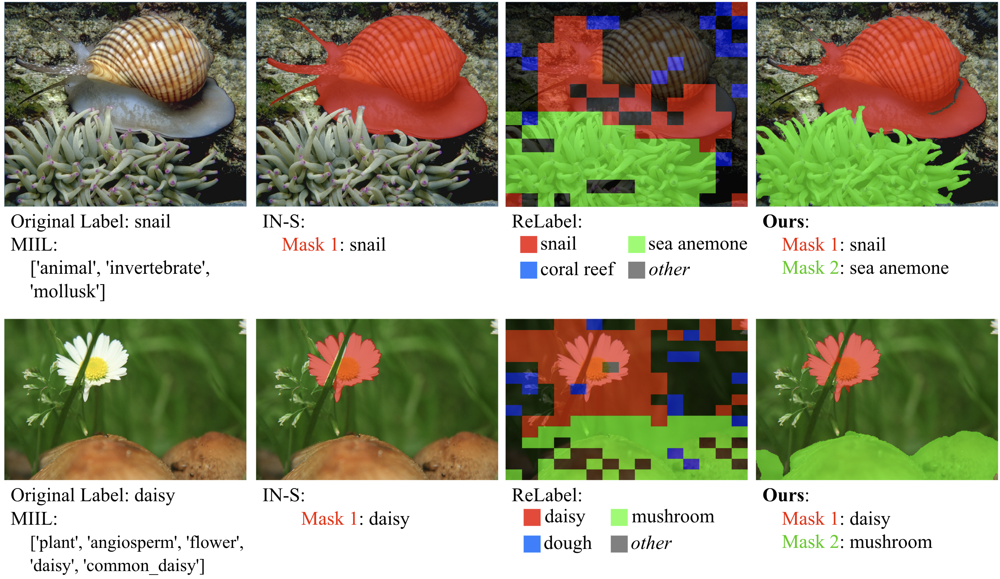
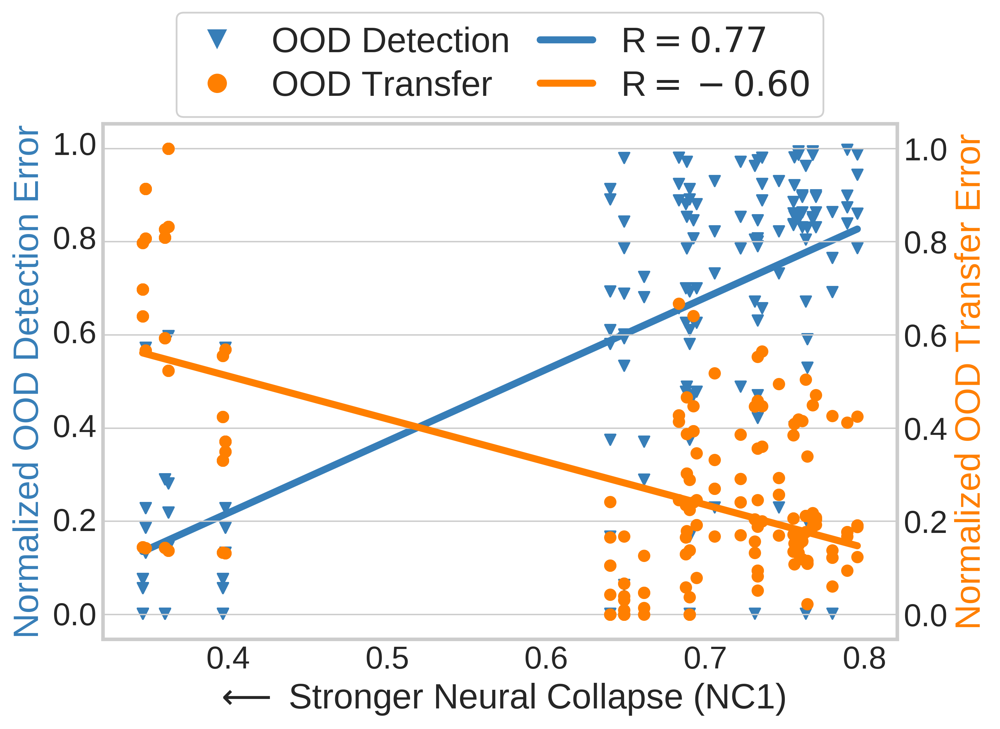
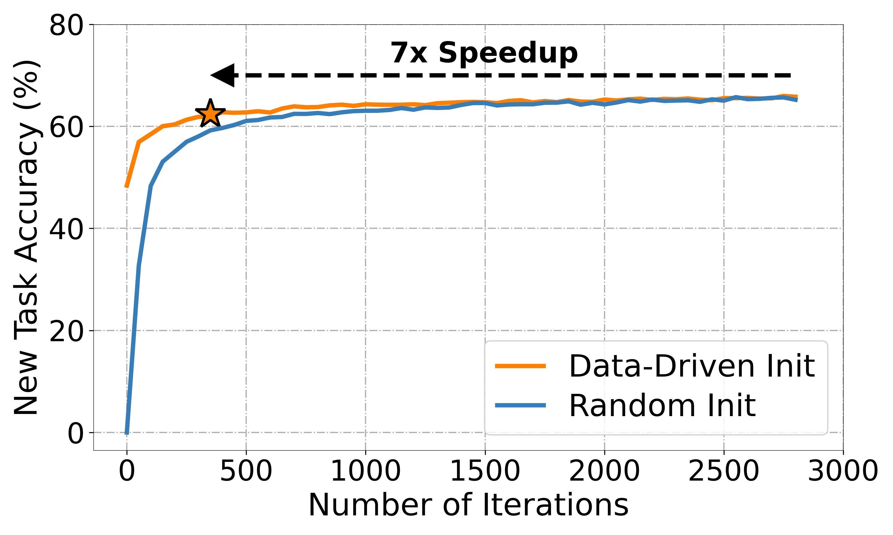
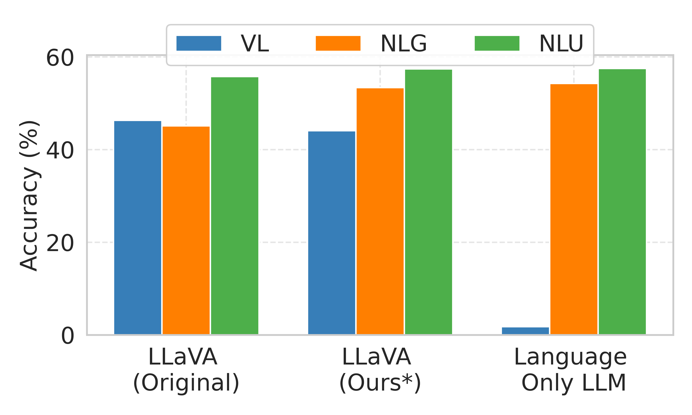
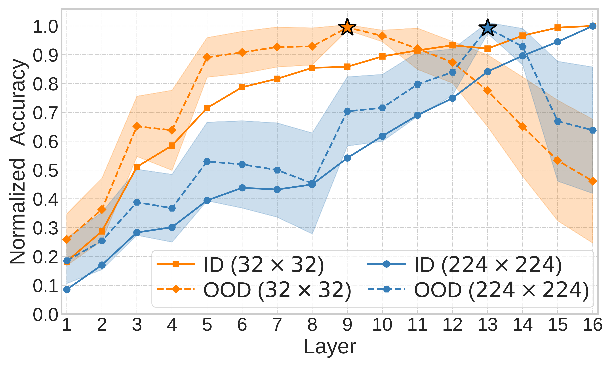
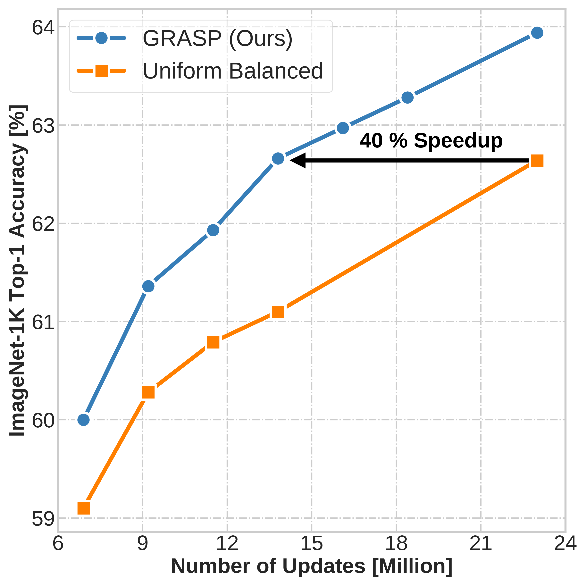
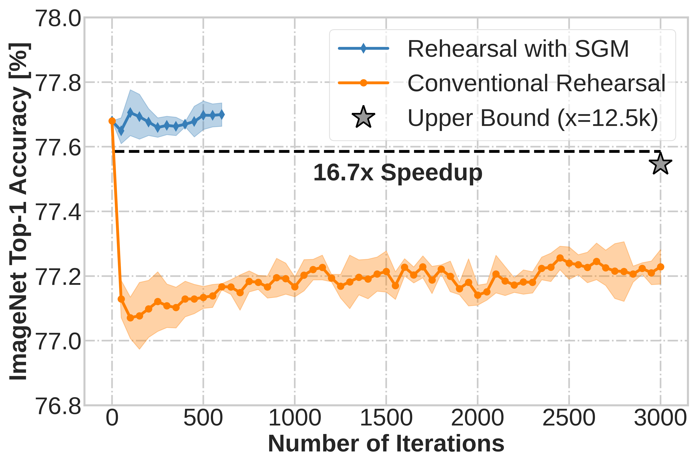
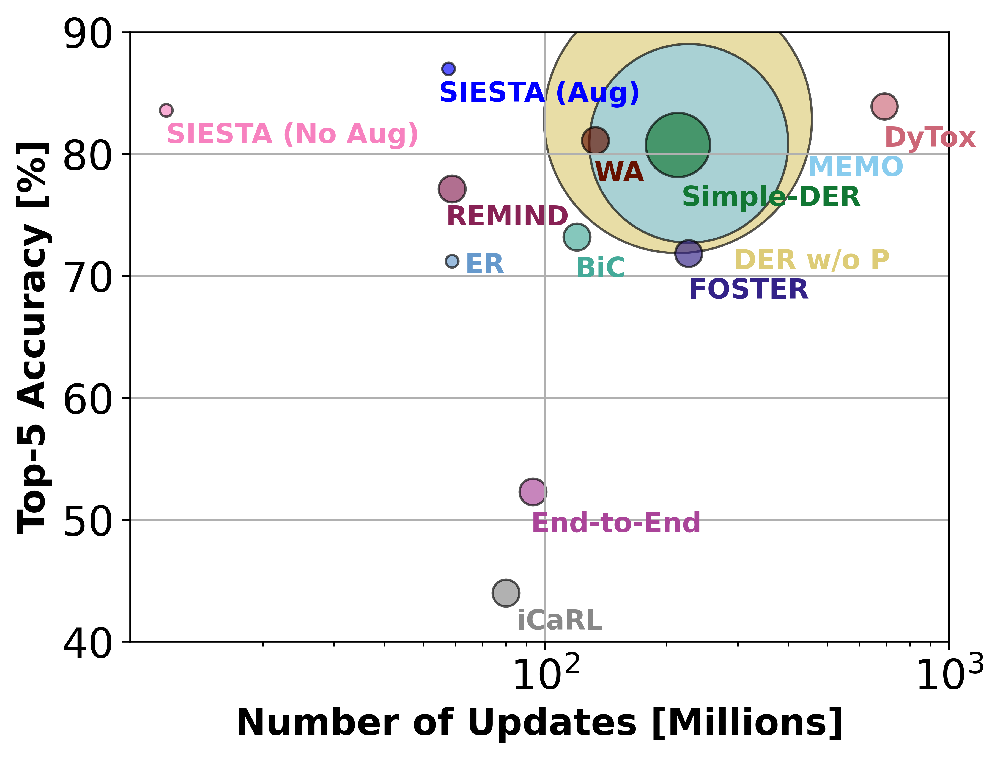
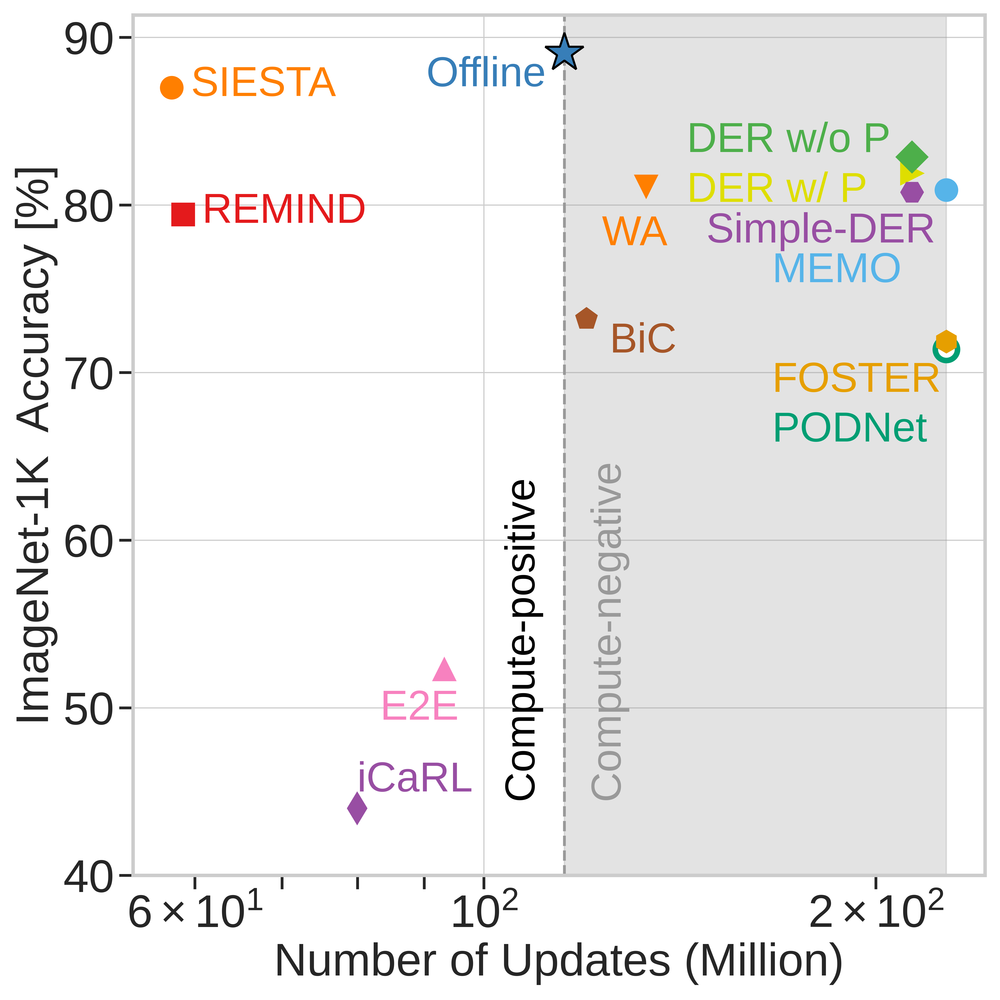

The original ImageNet benchmark enforces a single-label assumption, despite many images depicting multiple objects. This leads to label noise and limits the richness of the learning signal. Multi-label annotations more accurately reflect real-world visual scenes, where multiple objects co-occur and contribute to semantic understanding, enabling models to learn richer and more robust representations. While prior efforts (e.g., ReaL, ImageNetv2) have improved the validation set, there has not yet been a scalable, high-quality multi-label annotation for the training set. To this end, we present an automated pipeline to convert the ImageNet training set into a multi-label dataset, without human annotations.

Out-of-distribution (OOD) detection and OOD generalization are widely studied in deep learning, yet their relationship remains poorly understood. We empirically show that the degree of Neural Collapse (NC) in a network layer is inversely related with these objectives: stronger NC improves OOD detection but hurts generalization, while weaker NC does the opposite. This trade-off suggests that a single feature space cannot simultaneously achieve both tasks. To address this, we develop a theoretical framework linking NC to these objectives and propose a method to control NC across layers using entropy regularization for OOD generalization and a fixed Simplex ETF projector for OOD detection.

Continual learning systems must efficiently learn new concepts while preserving prior knowledge. However, randomly initializing classifier weights for new categories causes instability and high initial loss, requiring prolonged training. Inspired by neural collapse, we propose a data-driven weight initialization strategy using a least-square analytical solution, aligning weights with learned features. This reduces loss spikes and accelerates adaptation.

Generative LLMs gain multimodal capabilities by integrating pre-trained vision models, but this often leads to linguistic forgetting. We analyze this issue in LLaVA MLLM through a continual learning lens, evaluating five methods to mitigate forgetting. Our approach reduces linguistic forgetting by up to 15% while preserving multimodal accuracy. We also demonstrate its robustness in sequential vision-language tasks, maintaining linguistic skills while acquiring new multimodal abilities.

Embeddings produced by pre-trained deep neural networks (DNNs) are widely used; however, their efficacy for downstream tasks can vary widely. We study the factors influencing out-of-distribution (OOD) generalization of pre-trained DNN embeddings through the lens of the tunnel effect hypothesis, which suggests deeper DNN layers compress representations and hinder OOD performance. Contrary to earlier work, we find the tunnel effect is not universal. Our results emphasize the danger of generalizing findings from toy datasets to broader contexts.

In this work, we propose a new sample selection or rehearsal policy called GRASP (GRAdually Select less Prototypical) for efficient continual learning (CL). GRASP is a dynamic rehearsal policy that progressively selects harder samples over time to efficiently update deep neural networks on large-scale data streams in CL settings. GRASP is the first method to outperform uniform balanced sampling in both large-scale vision and NLP datasets. GRASP has potential to supplant expensive periodic retraining and make on-device CL more efficient.

Pre-trained deep neural networks (DNNs) are being widely deployed by industry for making business decisions and to serve users; however, a major problem is model decay. To mitigate model decay, DNNs are retrained from scratch which is computationally expensive. In this work, we study how continual learning could overcome model decay and reduce computational costs. We identify the stability gap as a major obstacle in our setting. We study how to mitigate the stability gap and test a variety of hypotheses. This leads us to discover a method that vastly reduces the stability gap and greatly increases computational efficiency.

For continual learning (CL) to make a real-world impact, CL systems need to provide computational efficiency and rival traditional offline learning systems retrained from scratch. Towards that goal, we propose a novel online CL algorithm named SIESTA. SIESTA uses a wake/sleep framework for training, which is well aligned to the needs of on-device learning. SIESTA is far more computationally efficient than existing methods, enabling CL on ImageNet-1K in under 2 hours; moreover, it achieves "zero forgetting" by matching the performance of the joint model, a milestone critical to driving adoption of CL in real-world applications.

Continual learning (CL) has focused on catastrophic forgetting, but a major motivation for CL is efficiently updating deep neural networks (DNNs) with new data, rather than retraining from scratch when dataset grows over time. We study the computational efficiency of existing CL methods which reveals that many are as expensive as training offline models from scratch. This defeats the efficiency aspect of CL.